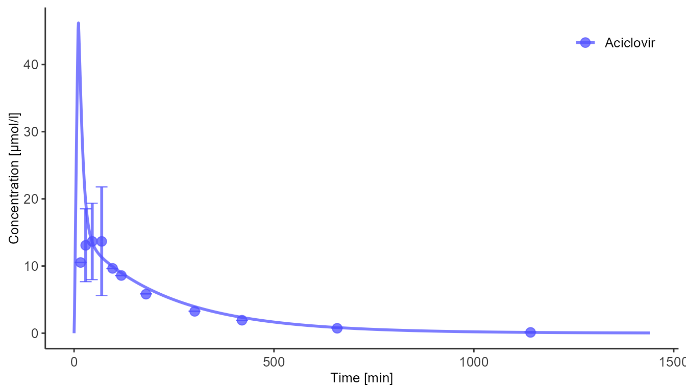
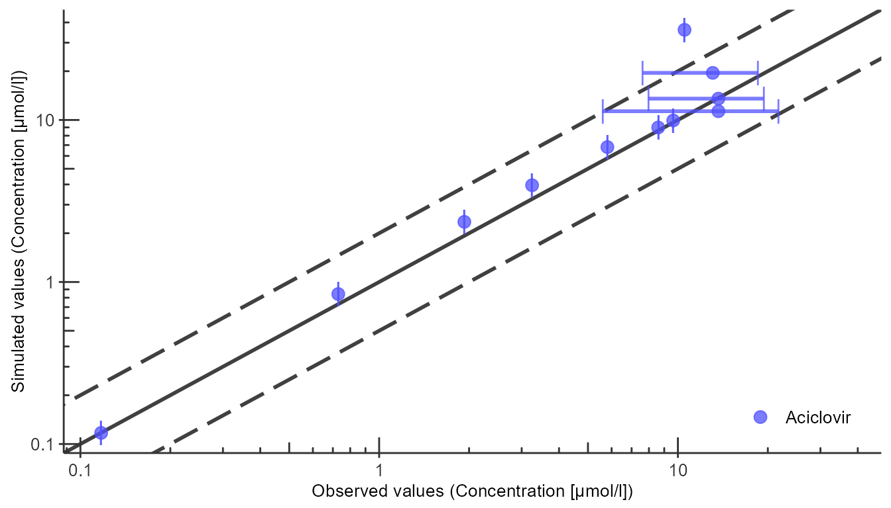
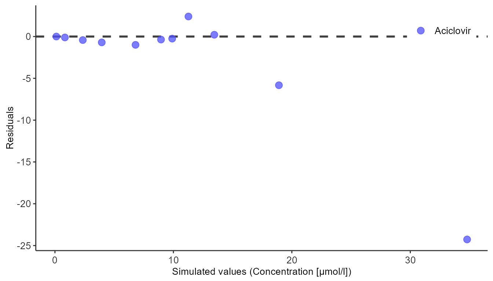
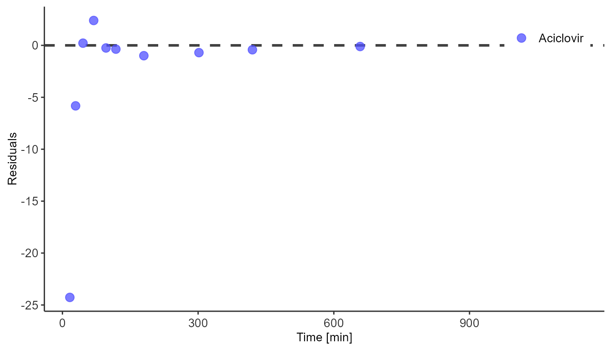

Workflow
Plotting the simulation results is an important part of model diagnostics and quality control. Simulated modeling scenarios can be passed to plotting functions from the ospsuite package to create uniformly-looking plots.
DataCombined is a class used to store matching observed
and simulated data. Initialize a new class instance and populate it with
data with the following code:
dataCombined <- DataCombined$new()
dataCombined$addDataSets(observedData, names = "Observed", groups = "Aciclovir")
dataCombined$addSimulationResults(simulatedScenarios$TestScenario$results, names = "Simulated", groups = "Aciclovir")
dataCombined$toDataFrame()
#> # A tibble: 1,452 × 25
#> name group dataT…¹ xValues xUnit xDime…² yValues yUnit yDime…³ yErro…⁴
#> <chr> <chr> <chr> <dbl> <chr> <chr> <dbl> <chr> <chr> <dbl>
#> 1 Observed Aciclov… observ… 0.273 h Time 2.37 mg/l Concen… 0
#> 2 Observed Aciclov… observ… 0.485 h Time 2.95 mg/l Concen… 1.23
#> 3 Observed Aciclov… observ… 0.758 h Time 3.08 mg/l Concen… 1.28
#> 4 Observed Aciclov… observ… 1.15 h Time 3.08 mg/l Concen… 1.82
#> 5 Observed Aciclov… observ… 1.61 h Time 2.17 mg/l Concen… 0
#> 6 Observed Aciclov… observ… 1.97 h Time 1.93 mg/l Concen… 0
#> 7 Observed Aciclov… observ… 3 h Time 1.31 mg/l Concen… 0
#> 8 Observed Aciclov… observ… 5.03 h Time 0.732 mg/l Concen… 0
#> 9 Observed Aciclov… observ… 7 h Time 0.434 mg/l Concen… 0
#> 10 Observed Aciclov… observ… 11.0 h Time 0.164 mg/l Concen… 0
#> # … with 1,442 more rows, 15 more variables: yErrorType <chr>,
#> # yErrorUnit <chr>, molWeight <dbl>, lloq <dbl>, Sheet <chr>,
#> # `Study Id` <chr>, `Subject Id` <chr>, Organ <chr>, Compartment <chr>,
#> # Species <chr>, Gender <chr>, Dose <chr>, Molecule <chr>, Route <chr>,
#> # IndividualId <int>, and abbreviated variable names ¹dataType, ²xDimension,
#> # ³yDimension, ⁴yErrorValuesThe simulation results are stored in a list returned by the
runScenarios() function. Plotting and visualization is
performed by storing these results along with matching observed data in
a DataCombined object and passing it to plotting functions.
Observed data in the form of Data Set objects is added to a
DataCombined object via the addDataSets
method, simulated data can be added by using
addSimulationResults. Observed and simulated data can be
linked by setting the groups argument in both methods. Data
of the same group will then be plotted together when calling plotting
functions on the DataCombined object.
Plotting functions in the ospsuite package are
wrappers around tlf plotting functions that provide
default plot configuration options. All of them accept instances of
DataCombined class as the data source.
Time profile plots visualize the pharmacokinetics of the drug in question and help assess if the observed data (represented by points and error bars) match the simulated data (represented by lines).
plotIndividualTimeProfile(dataCombined)
#> Warning: Removed 8 rows containing missing values (geom_segment).
#> Removed 8 rows containing missing values (geom_segment).
Observed versus simulated plots show if simulated time points and observed time points follow a linear trend.
plotObservedVsSimulated(dataCombined)
Residual plots show if there is a systematic bias in how the simulation represents values either in high-concentration or low-concentration regions, or, alternatively, in early or late time periods.
plotResidualsVsSimulated(dataCombined)
plotResidualsVsTime(dataCombined)
The plots returned by plotting functions are ggplot
objects. They can be modified further and saved to files with
ggplot2 functions:
plotObject <- plotIndividualTimeProfile(dataCombined)
ggplot2::ggsave(filename = "../Results/aciclovir_time_profile.png", plotObject, width = 8, height = 4)
#> Warning: Removed 8 rows containing missing values (geom_segment).
#> Removed 8 rows containing missing values (geom_segment).